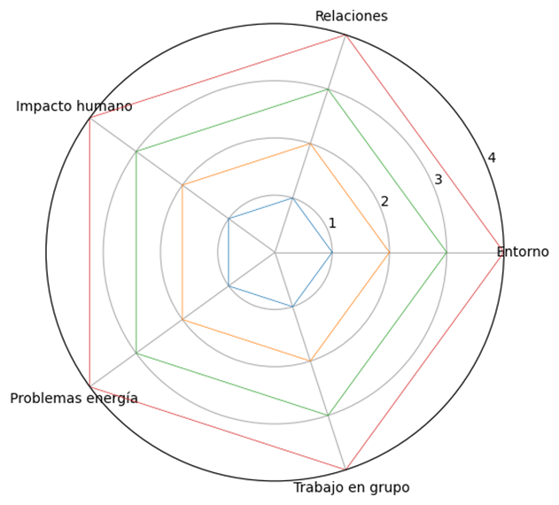

Texto
<br>
EVALUACIÓN DE LA SITUACIÓN DE APRENDIZAJE
Las técnicas de evaluación que voy a utilizar son las siguientes:
¥ OBSERVACIÓN INTERNA. Consiste en observar no solo lo que hacen desde el punto de vista curricular, sino su actitud ante el proceso de enseñanza-aprendizaje, su integración en la clase, su motivación, su tolerancia, el fracaso, etc.
¥ RESOLUCIÓN DE PROBLEMAS. A través de una prueba escrita.
¥ VALORACIÓN DE PRODUCCIONES. A través del porfolio y el porfolio digital.
¥ ASAMBLEA EDUCATIVA. En ella el alumno/a expresa lo que piensa de cada unidad didáctica. Quedará escrito en un formato del tipo: “Me ha gustado…”, “No me ha gustado…” y “Propongo…”.
Dentro de estas técnicas, se van a utilizar los siguientes instrumentos de evaluación:
- Registro anecdótico. La idea básica consiste en anotar lo que se ve u oye, sin hacer comentario de lo que se piensa que pasa o sobre las causas de esa conducta.
- Diario de clase: se utiliza para recoger notas apuntadas con fecha y hora, sobre observaciones, sentimientos, reflexiones o explicaciones.
- Porfolio y porfolio digital. Consiste en una carpeta donde cada alumno guarda sus trabajos y tareas más significativas (tanto escritos y manuales, como audiovisuales), así como el cuaderno. De esta manera el docente y el propio discente puede analizar sus avances.
- Pruebas escritas y orales. Ejercicios recopilatorios que demuestran el grado de desarrollo de los objetivos.
- Rúbrica: Guías de puntuación para orientar la evaluación, con 4 niveles de logro, que me sirve para convertir la evaluación en calificación, correspondiendo cada nivel de logro a un criterio de calificación. Igualmente, también se ofrecen al alumnado antes de determinadas actividades, para que conozcan qué se espera de la actividad y puedan autoevaluarse.
-Dianas de evaluación para la autoevaluación del propio discente y la coevaluación.
La rúbrica es el instrumento de calificación que utilizo para obtener una valoración numérica lo más objetiva posible, a partir de los criterios de calificación ya referidos. A continuación se presenta a rúbrica para la evaluación y calificación de la actividad evaluable nº 4 propuesta en las anteriores módulos:
RÚBRICA Actividad evaluable 4 Investigación ahorro energía 5º primaria
Alumno/a:
Indicadores
4 - Excelente
3 - Bien
2 - En proceso
1 - Inicial
1. Identifica elementos del entorno (natural, social y cultural)
Identifica claramente muchos elementos (energía, entorno, hábitos, Andalucía) y los usa correctamente.
Identifica varios elementos de forma adecuada.
Identifica algunos elementos, pero con dudas.
Tiene dificultades para identificar elementos.
2. Relaciona elementos entre sí
Explica muy bien cómo se relacionan el consumo eléctrico, las personas y el entorno.
Explica algunas relaciones de forma clara.
Establece relaciones simples o poco claras.
No logra establecer relaciones.
3. Reconoce el impacto del ser humano
Explica claramente cómo las personas afectan al entorno con ejemplos.
Reconoce el impacto humano con alguna explicación.
Menciona el impacto de forma básica.
No reconoce el impacto humano.
4. Identifica problemas del consumo energético
Identifica varios problemas (contaminación, gasto excesivo…) y los explica bien.
Identifica algún problema de forma adecuada.
Identifica problemas de forma poco clara.
No identifica problemas.
5. Trabajo en grupo e investigación
Participa activamente, busca información y colabora muy bien.
Participa y colabora de forma adecuada.
Participa poco o necesita ayuda frecuente.
Apenas participa o no colabora.
Puntuación total:
Categoría: ☐ Excelente (18–20) ☐ Notable (14–17) ☐ Suficiente (10–13) ☐ Necesita mejorar (<10)
La rúbrica evalúa:
La comprensión del entorno (natural, social y cultural).
La capacidad de establecer relaciones.
La conciencia del impacto humano.
La identificación de problemas energéticos.
El trabajo cooperativo e investigación.
Está alineada con los criterios de evaluación y competencias clave, especialmente:
Competencia en conciencia y sostenibilidad.
Competencia social y cívica.
Competencia aprender a aprender.
Para utilizar la rúbrica:
Se utilizará como instrumento principal de evaluación del producto final (actividad de investigación sobre el ahorro energético).
El docente evaluará al alumnado asignando un nivel (1–4) en cada indicador.
También se compartirá previamente con el alumnado para:
Hacerla transparente
Favorecer la autoevaluación
¿Para qué sirven los datos (más allá de calificar)?
Ajustar futuras situaciones de aprendizaje
Detectar necesidades de refuerzo
Mejorar la enseñanza (evaluación formativa)
Informar a familias con criterios claros
Variables a tener en cuenta
Diferencias en el trabajo en grupo
Nivel de competencia lingüística
Motivación del alumnado
Apoyo externo (familia, recursos digitales)
Otro instrumento de evaluación es la DIANA DE EVALUACIÓN (AUTOEVALUACIÓN Y COEVALUACIÓN)
¿Qué evalúa?
La diana evalúa la percepción del propio alumnado sobre:
Su implicación en la tarea
Su aprendizaje sobre el ahorro energético
Su participación en el grupo
Su esfuerzo y progreso
¿Cómo se va a utilizar?
El alumnado coloreará o marcará niveles en una diana (tipo gráfico circular).
Cada eje corresponde a un criterio (por ejemplo):
Participación
Comprensión
Trabajo en grupo
Interés
También se puede usar para:
Autoevaluación
Coevaluación (evaluar a compañeros)
¿Cuándo se utilizará?
Al final de la actividad
También puede aplicarse en momentos intermedios para seguimiento
¿Qué datos se obtienen?
Datos visuales (gráficos) del nivel percibido por el alumnado
Información subjetiva sobre:
Motivación
Seguridad en el aprendizaje
Percepción del trabajo en grupo
¿Cómo se analizarán los datos?
Comparación entre:
Autoevaluación vs evaluación del docente (rúbrica)
Detección de:
Sobrevaloración o infravaloración del alumnado
Identificación de:
Problemas de autoestima
Falta de implicación
Conflictos en el trabajo cooperativo
¿Para qué sirven los datos?
Fomentar la metacognición
Mejorar la autonomía del alumnado
Ajustar dinámicas de grupo
Detectar necesidades emocionales o motivacionales
Variables a tener en cuenta
Madurez del alumnado (pueden no autoevaluarse con precisión)
Influencia del grupo en coevaluación
Estado emocional del alumno/a
Para controlarlo:
Explicar bien cómo usar la diana
Complementar con observación docente
No usarla como único instrumento de calificación

../content/resources/202604082055305134T3/INSTRUMENTOS_DE_EVALUACIN.pdf